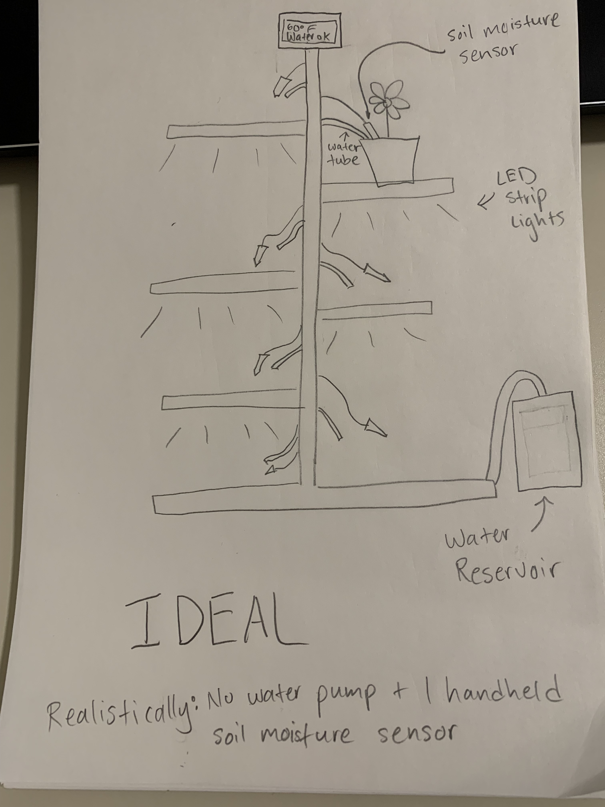
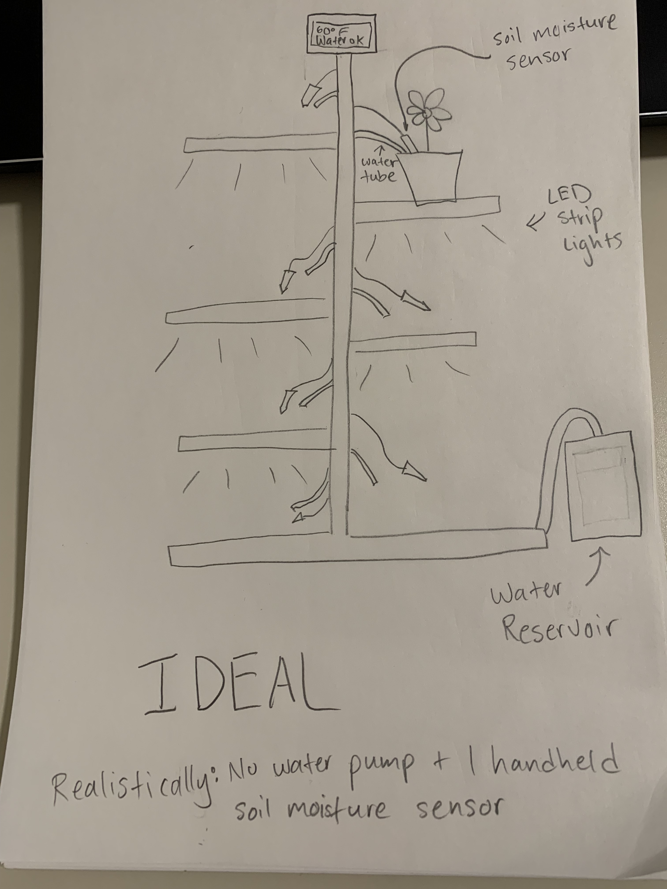

Final Project Proposal!
Concept/Motivation:
- “I want to upgrade a plant stand I have into a complete plant care system! My apartment gets very little light in so I want it to be LED lights that I can control with a remote control that has perfect settings a plant’s light needs. The stand will also have a built in temperature sensor and soil moisture sensor. If I’m feeling ambitious, I also plan on building in an automated watering function.”
Bill of Materials:
- LEDs strip lights (plant growing lights)
- RGB lights (to indicate health status)
- Remote control (for controlling LED strip)
- Temp + Humidity sensor (for temp sensing)
- IR receiver (for remote control)
- Assorted resistors (for current-limiting)
- Soil Moisture Sensor (to sensor soil moisture)
- LCD display (to display sensor readings)
- Plant stand (to upgrade)
Timeline and contingency plans:
2/26-27: Implement the circuit and code for the LED strip light and remote control.
2/28 -29: Implement circuit and code for the sensors and reading displays
2/28 - 3/1: Build the product, conduct testing, make any necessary revisions
3/1 - 3/3: Finish demo video & work on documentation
3/4: Presentation & submit documentation
(If extra time + energy: implement the circuit and code for water pump)
If anything goes wrong, I will just settle for the MVP which is LED lights and temp sensor.
I’m going to be making this as a gift to my sister so hopefully she likes it!
Back to Homepage
 
